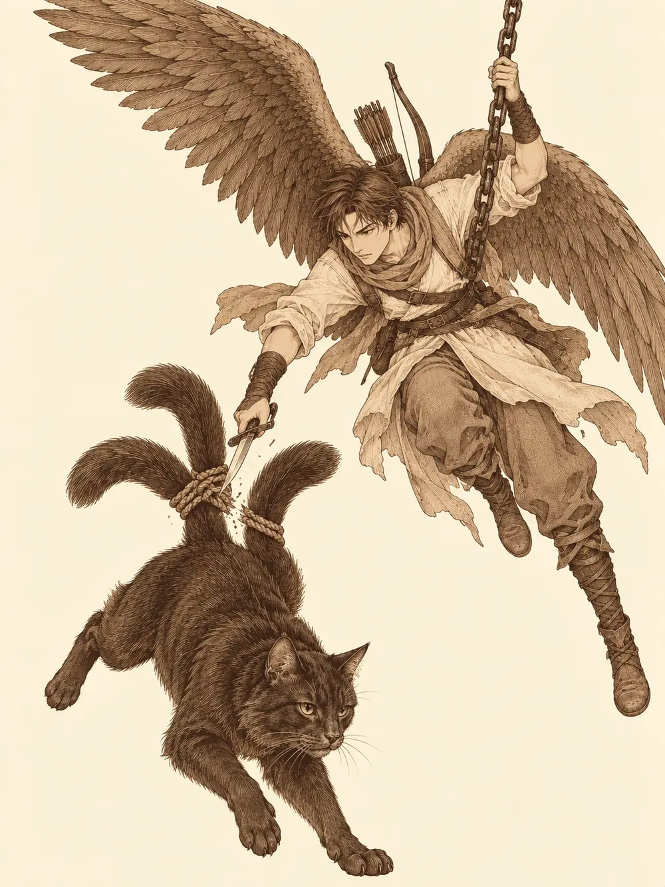

Capítulo 8
¿Dónde está el gato?
Libro I · Los cazadores de Ukio
La chimenea estaba vacía. Había brasas, había un hueco tibio en la repisa donde el pelo negro había dejado su marca, había un plato en la mesa de al lado al que nadie le había robado nada. Faltaba el gato.
Kitaro, que recogía vasos, se encogió de hombros cuando se lo preguntaron. Ni idea. Shiro, que salía de la cocina con una pila de cuencos sucios, se detuvo a pensar. A veces, cuando salía por la noche a tirar la basura, lo veía merodeando fuera de la taberna. Quizá se había perdido.
"Ya volverá", dijo Kitaro.
A Sun Gukon aquello le traía sin cuidado. Siguió sorbiendo su caldo de fideos con la tranquilidad de quien no ha perdido nada, comentó que el gato le importaba tres leches y anunció que se iba a la tienda de la madame a probar suerte. Volvió con las mismas monedas con que había salido. Hayate y Hino Yama, en cambio, salieron a buscar.
Alrededor de la taberna no había nada útil, solo un revoltijo de huellas de perro, de gallina, de gato y de cualquier otra cosa que pasara por allí. Hayate recorrió las salidas del pueblo. El rastro del nekomata no iba hacia fuera. Encontró arañazos en uno de los arcos de madera de la entrada, como si el gato hubiera trepado por él para mirar desde arriba, y unas huellas que siempre volvían hacia dentro. Lo siguió hasta un estanque donde nadaban peces de colores, gordos y lentos. Allí las pisadas pequeñas del gato se mezclaban con otras más grandes, de varias personas, y el barro estaba removido como después de un forcejeo.
No había sangre. Hino Yama se agachó y pasó la mano por encima del suelo sin tocarlo, con los ojos entornados. Allí se había usado magia hacía poco. El rastro se alejaba hacia las calles donde las casas se apretaban unas contra otras.
Lo siguieron entre callejones. Pasaron por delante de un pequeño templo con la puerta cerrada y un cartel. No había sacerdote; hacía unos tres meses que nadie veía ninguno. Más allá, el rastro mágico se detenía ante la puerta de una casa corriente, con las ventanas cerradas a cal y canto. Hino Yama no quiso seguir solo. Fue a buscar a los demás.
Sun protestó todo el camino. Otra misión sin paga, por un gato que no hacía más que tocar las narices.
"Eres cazador de yokai, ¿no?", le dijo alguien. "Pues el gato es un yokai. Si quieres cazarlo, nadie te lo va a impedir".
Llamaron. Nadie contestó. Hayate sacó unas herramientas finas de la bolsa, se arrodilló ante la cerradura y al cabo de un momento se oyó un clic.
Dentro olía a cerrado. No había casi nada: una habitación desnuda y, en un rincón, una estufa de hierro oxidada, fría, que no se había encendido en años. Hino Yama se fijó en el suelo. Había rayas en la madera, arcos de algo pesado que alguien había arrastrado muchas veces. Vertió un poco de sake alrededor de la estufa. El líquido no se quedó donde lo echó; corrió hacia la base y desapareció por debajo, como si allí hubiera un agujero.
La apartaron entre varios. Debajo había una trampilla, y debajo de la trampilla, unas escaleras que bajaban a la oscuridad. Desde muy lejos llegaba un eco de voces.
Tarutaru dejó en el suelo a su araña, que desde hacía unos días se movía con una rigidez de cosa muerta, y la mandó por delante. Volvió al cabo de un minuto y se le subió al hombro para contarle al oído lo que había visto: un pasillo con cuatro puertas a los lados y una al fondo. Detrás de la del fondo había hombres. Y yokai encerrados.
Bajaron.
Las dos primeras habitaciones eran dormitorios. Dos camas, una mesa de trabajo con pinzas, cuchillos, cadenas, clavos, y un cofre pequeño con trece monedas de oro. En una caja llena de papeles, Hino Yama encontró un pergamino con un conjuro para abrir cerraduras y se lo guardó con una sonrisa; aquello lo podía aprender. Ropa, gorros altos, nada de valor.
Sun abrió otro cofre en la siguiente habitación, y el cofre le mordió.
Tenía dientes por dentro, en lugar de tablas, y una lengua gruesa y pegajosa que salió disparada hacia el monje. Sun saltó hacia atrás con la mano sangrando. Hayate le clavó dos flechas, una de ellas en plena lengua, que se agitaba como un látigo con la flecha dentro. Hino Yama le lanzó una bola de fuego. Tarutaru le abrió un tajo con su espada enorme, y el bicho, furioso, le enroscó la lengua alrededor del cuerpo y la dejó pegada a él como una mosca a la miel. Entre todos lo destrozaron. Cuando por fin dejó de moverse, lo abrieron. Dentro no había ningún tesoro. Las demás cajas solo guardaban ropa.
Detrás de la puerta doble del fondo se oían voces y, de vez en cuando, risas. Apagaron las antorchas del pasillo. Alguien dejó una trampa en el suelo, junto a la entrada. Hayate se fundió con la oscuridad. Luego Sun se acercó a la puerta y llamó.
Se abrió una hoja. Una mujer con ropas holgadas se asomó a mirar, y aunque el pasillo estaba a oscuras, distinguió la silueta del mono.
"¿Qué haces tú aquí?".
Los demás saltaron desde las sombras. La mujer y otra que estaba con ella dentro no llevaban armas. Llevaban papeles, tiras de papel escritas con tinta que brillaba, y cada vez que lanzaban una, la tira se transformaba en el aire en otra cosa: una flecha, un fogonazo, una ráfaga que empujaba. Hino Yama tendió un hilo de rayo entre su mano y una de ellas, y la mujer se retorció y cayó al suelo humeando.
Hayate, invisible en la oscuridad, le habló a la otra.
"¿Dónde está nuestro gato?".
"Tu gato está siendo sacrificado ahora mismo".
El arquero le disparó al hombro con cuidado de no matarla. La mujer se desplomó, sangrando. Alguien la acosó a preguntas, y ella, asustada, señaló otra puerta y se echó a reír.
"Ya debe de estar casi muerto. El ritual se habrá completado".
Sun le dio un bastonazo en la cabeza y la dejó inconsciente.
En aquella sala había celdas. Al verlas, ninguno dijo nada durante un rato. En una había un kamaitachi, una comadreja con cuchillas en las patas como la que habían matado en el bosque, pero pequeña, encogida y llena de cortes, que les enseñaba los dientes con más miedo que rabia. En otra, un paraguas con una sola pierna y una sonrisa bobalicona que brincaba sin entender nada. En la tercera, una criatura hecha de polvo, parecida a un perro de pelusa, que recorría paredes y techo recogiendo suciedad y soltándola a la vez, sin terminar nunca de limpiar. En la cuarta, un kappa sin una gota de agua en la cabeza, seco y consumido. Y en la última, uno de esos yokai que viven en los baños, de lengua larguísima, que olía a letrina y lamía el suelo de su celda.
Todos tenían heridas. Cortes limpios, de cuchillo, en lugares donde nadie se hace daño peleando. Habían experimentado con ellos.
Sun se acercó a la reja del kappa con una botella de sake.
"Ven, acércate". Le vertió un chorro en el hueco de la coronilla. La criatura recuperó un poco de color, pareció animarse, dio un paso y se cayó de espaldas con el caparazón contra el suelo, borracha perdida.
Se curaron como pudieron, ataron a la guardiana inconsciente y se acercaron a la última puerta. Por debajo se colaba luz. Dentro, cuatro voces cantaban en coro y una quinta, más alta, recitaba en una lengua que no entendía nadie.
Abrieron.

En el centro de la sala había un círculo dibujado en el suelo, lleno de símbolos que brillaban. Del techo colgaba una cadena, y de la cadena, atado por las dos colas, se balanceaba el nekomata, retorciéndose para soltarse. Cuatro figuras rodeaban el círculo con los brazos extendidos. Al fondo, una quinta leía en voz alta de un libro negro.
Hino Yama no les dio tiempo a reaccionar. Lanzó un orbe de ácido contra la oficiante más cercana, que gritó y rompió el canto. Los demás abrieron fuego a la vez. Las voces se quebraron una tras otra, y el símbolo del suelo parpadeó y se apagó.
El gato seguía colgado, incómodo, furioso, pero entero.
Lo que vino después fue una batalla en un sótano lleno de humo. Los oficiantes también usaban magia, y no poca. El aire se retorcía alrededor de alguno de ellos como si se le mirara a través del agua. Volaban esquirlas de hielo, salpicaduras de ácido, llamaradas. Hino Yama cubrió media sala de telarañas para frenarlos y se parapetó tras una columna. Una de las magas, atrapada en la red, se rodeó de una nube de dagas giratorias que cortaban todo lo que se acercaba, y el mago respondió prendiendo fuego a su propia telaraña con un orbe de llamas. La red ardió con la mujer dentro, y las dagas se deshicieron en el aire.
Hayate disparaba desde la entrada. Sun y Tarutaru peleaban dentro, rodeados. Otra maga extendió las manos y de ellas brotó un abanico de fuego que alcanzó a la araña de Tarutaru. La drow vio morir a su araña por segunda vez.
Una oficiante juntó las palmas, y de entre ellas salió una onda de trueno que barrió a los que estaban cerca. Tarutaru salió despedida y se quedó tendida en el suelo, sin sentido.
Hayate echó a volar. Cruzó la sala por encima de las cabezas, se agarró a la cadena a medio metro del gato y vio que las colas estaban atadas con un nudo de cuerda. Sacó la daga y la cortó. El nekomata cayó al suelo sobre las cuatro patas, como caen los gatos. Desde arriba, el arquero lanzó una poción hacia Tarutaru, que tosió y abrió los ojos.
El gato miró a Hayate.
"Gracias".
Y entonces se volvió, y su cara ya no era la de un gato.
Sun y Tarutaru lo vieron de frente y sintieron frío. Era una sonrisa demasiado ancha, que le partía la cara de oreja a oreja, y unos ojos desorbitados que no miraban a ningún sitio concreto. Atravesó la sala con una agilidad preciosa, se plantó delante de la mujer que parecía dirigir el ritual, levantó una zarpa que brillaba de color morado y le tocó el pecho.
La mujer se volvió negra de golpe, como un papel que se quema. Por un instante pareció una calavera. Luego se deshizo.
El gato se volvió hacia la última oficiante con la cabeza ladeada.
"Matadla".
"Necesitamos información", dijo alguien.
Sun se lanzó contra ella y la derribó de una patada, con cuidado de no matarla. La mujer quedó en el suelo, inconsciente. El nekomata se subió al hombro del monje y le habló al oído.
"Mátala".
"¿Desde cuándo tenemos tú y yo tanta confianza?".
El gato no insistió. Bajó de un salto, le tocó la frente a la mujer con una uña morada, y la mujer se desintegró igual que la otra. Así se quedaron sin nadie a quien preguntar.
Cuando terminó, la cara del gato volvió a ser la de un gato. Trepó al hombro de Hayate y se acomodó allí. Tarutaru recogió del suelo lo que quedaba de su araña y se la mostró sin decir nada, con la pregunta en los ojos. El nekomata se encogió de hombros, a su manera, y la tocó con la pata. La araña se estremeció y volvió a ponerse en pie, tan rígida como antes. La drow le hizo una reverencia, y el gato le dio unos golpecitos en la cabeza con la pata, como quien bendice a un súbdito. Cuando alguien sacó pescado seco de sus provisiones, el nekomata se le enroscó entre las piernas ronroneando, más cariñoso que nunca.
El libro negro seguía abierto sobre el atril. Estaba escrito en una lengua antigua, la que hablan las cosas que viven en lo más hondo, y nadie podía leerla del todo. Pero había dibujos y anotaciones al margen, y la idea se entendía: los yokai de las celdas eran combustible. Los iban a sacrificar para invocar algo más grande. Una figura que aparecía una y otra vez en las páginas, con forma de calavera.
Sun sacó un trapo, envolvió el libro con cuidado de no tocarlo y se lo guardó.
"¿A quién servían?", le preguntaron al gato.
"No tengo ni idea. Me querían sacrificar a mí. ¿Cómo me iban a sacrificar a mí?".
Quedaba la guardiana atada en la sala de las celdas. Seguía viva. Sun se la echó al hombro para llevársela, porque alguien tenía que contarles algo.
El gato fue derecho a Hayate y empezó a frotarse contra sus piernas.
"Mátala", le dijo en silvano. "Mátala, por favor. Tengo una sorpresa para ti".
Hayate tensó el arco y disparó. La flecha se clavó en la cabeza de la mujer, que colgaba sobre el hombro del monje.
"¿Estáis todos locos?", gritó Sun.
El nekomata se puso a dar arcadas, como hacen los gatos, y vomitó una bola de pelo enorme a los pies del arquero.
"Toma. Gracias".
Hayate apartó el pelo con asco, preguntándose qué habría comido aquel bicho, y dentro encontró un arco. Era un yumi, largo, de madera curvada, y en cuanto lo tuvo en la mano notó que había algo en él. Tenía magia, poca pero suficiente: guardaba tres cargas, y al gastar una, la flecha que acertaba volvía pesado y lento a quien la recibía. Era el primer objeto de verdad que sacaban de una cacería.
Abrieron las celdas. El yokai de los baños salió despacio, apestando, trepó por la pared, siguió por el techo y desapareció. El kamaitachi se fue tan deprisa que nadie lo vio salir. El paraguas se marchó a brincos, con la misma cara de no saber qué le había pasado. El kappa siguió en el suelo, panza arriba, borracho, y allí se quedó.
La criatura de polvo no quería irse. Se había puesto a limpiar el sótano, que estaba lleno de mugre, y daba vueltas por las paredes recogiendo y soltando suciedad, recogiendo y soltando. Intentaron cogerla y se les escurría entre los dedos. Al final Hayate agarró un puñado de polvo del suelo y lo fue soltando en el camino, poco a poco, y la criatura lo siguió, limpiando el reguero, escaleras arriba, por los callejones, hasta la taberna.
Era ya de noche cuando llegaron. Kitaro vio entrar al gato y se le iluminó la cara.
"¿Dónde estabas tú? Toma, tengo algo para ti".
Le dio un trozo de pescado. El nekomata lo cogió con la boca, subió a la chimenea y se acomodó en su hueco de siempre como si nunca se hubiera ido.
Luego Kitaro vio lo que venía detrás.
"¿Y eso qué es? Siempre estáis trayendo cosas raras".
Le explicaron que el suelo de la taberna siempre estaba sucio y que aquella criatura lo limpiaba sola, aunque fuera dejando un poco de suciedad a cada paso. Le pusieron de nombre Peluso. El tabernero la miró dar vueltas junto a sus pies, recogiendo una pelusa y soltando otra.
"Me está ensuciando el suelo", dijo. "Lo dejo un tiempo, de prueba. Pero no puedo tener así el bar".
Luego trajo la cena. Sun pidió que le cambiaran el sitio para no sentarse cerca del gato, y desde la chimenea dos ojos amarillos lo siguieron mientras se cambiaba de silla, sin pestañear.